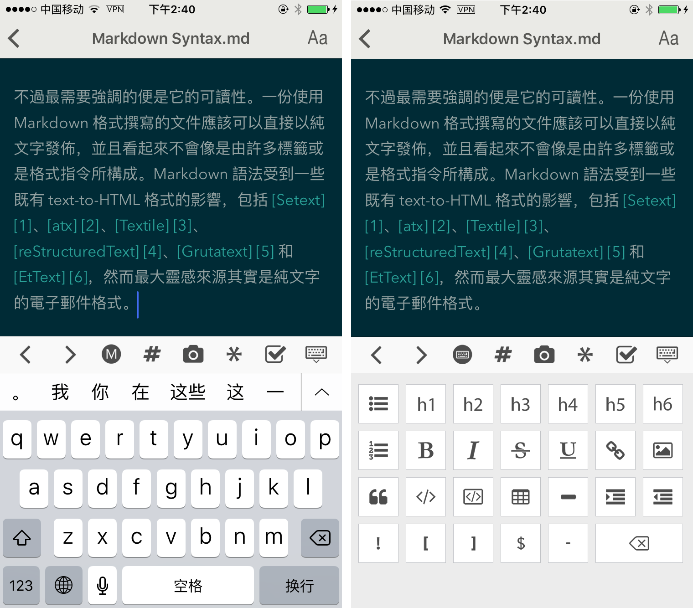
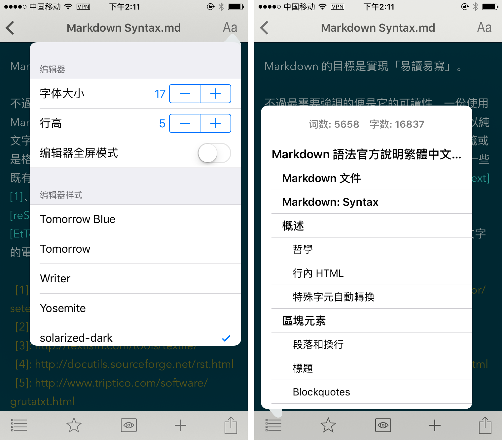
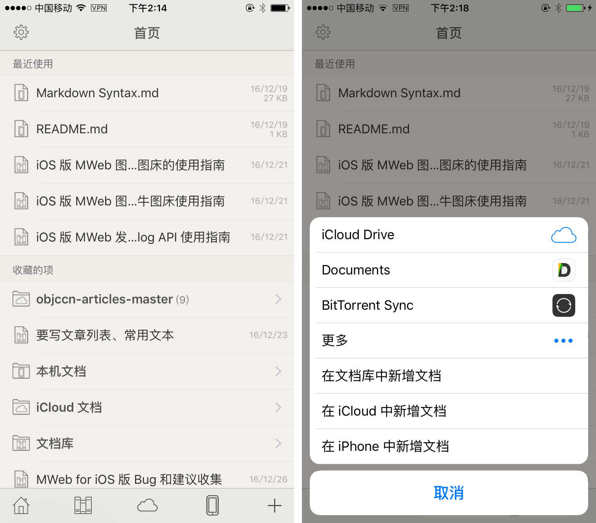
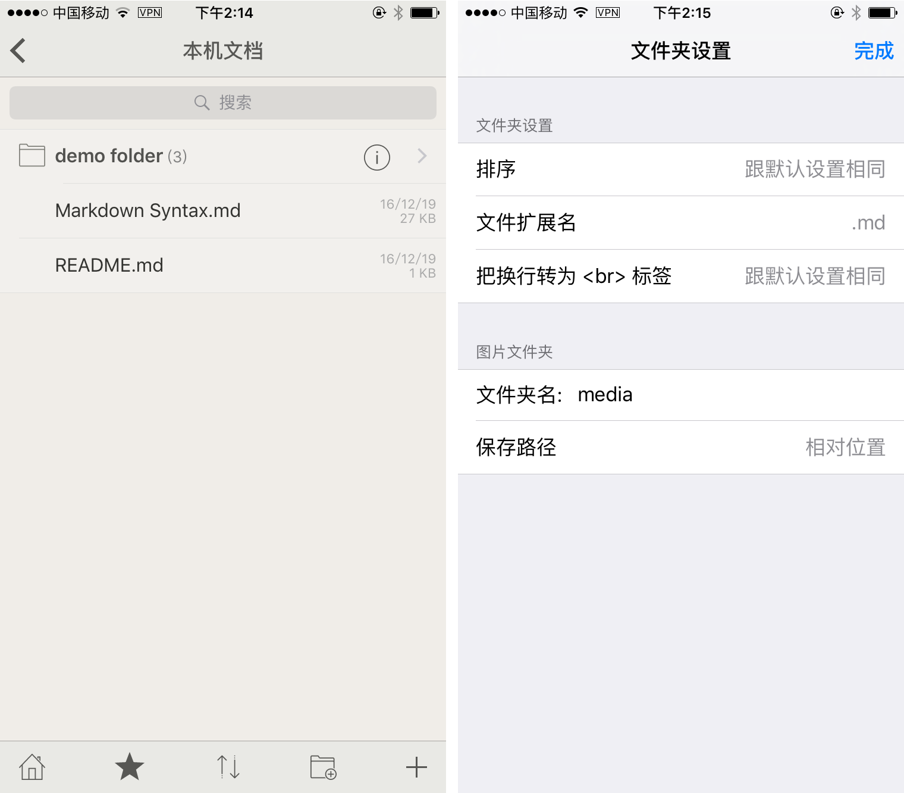

MWeb 首先是一个 Markdown 编辑器，所使用的 Markdown 语法为 Github Flavored Markdown，简称 GFM，这是一种最为广泛使用的 Markdown 语法之一。如果你不知道什么是 Markdown，建议看一下附带的 Markdown 语法官方说明 文档。GFM 除了支持官方的语法外，还扩展了不少语法，具体情况会在本文后说明。这里先介绍一下 iOS 版 MWeb 的基本使用方法。
iOS 版 MWeb 的编辑器介绍
自定义键盘

如上图所示，iOS 版 MWeb 为方便输入 Markdown 语法，自定义了一些按钮，点击上图左边的图中的 (M) 按钮，可以切换至右图的效果，再按可以切换回来。有些不用先选中文字即可使用，比如说如果当前行是任务列表，点击任务列表按钮，会把当前行的任务标记为完成，再点则标记为未做。
编辑器样式、预览样式、大纲视图

如上图左边的图所示，右上角的按钮可以快速设置编辑器的字体大小和行高，更换编辑器样式和预览样式。还有一个 “编辑器全屏模式” 的选项，开启后，编辑和查看时，编辑器会全屏显示。底部有五个按钮，分别为：文档大纲、收藏、切换预览模式和编辑模式、新增、分享，如上图右边的图是点击文档大纲按钮的效果。
导出为图片和 PDF、发布服务、图床功能
iOS 版 MWeb 跟 Mac 版一样，也支持把文档发布到 Wordpress、Metaweblog API 、Evernote、Blogger 和 Medium。除了发布到 Medium 外，其他都支持更新已发布的文档，发布时，如果文档中有图片，也会自动上传。如上图左边的图所示，点击分享按钮即可使用此功能。另外，iOS 版 MWeb 还支持图床，要使用这些功能，要先到设置页面增加相关服务，如上图右边的图所示。更详细的使用说明，可参考以下三篇文章：
- iOS 版 MWeb 发布到自建 Wordpress 和 Metaweblog API 使用指南
- iOS 版 MWeb 图床功能及七牛图床使用指南
- iOS 版 MWeb 图床功能中自定义图床的使用指南
iOS 版 MWeb 首页及文档管理介绍
首页和打开外部文档

上图中，左边的是首页，首页有最近使用的文档和收藏内容这两大块。
最近使用只会显示最近使用的 5 个文档，包括文档库的文档、iCloud 中的文档、在手机本地的文档，可以看边上的图标来识别文档类型。
而收藏不只可以收藏文档，还可以收藏文件夹、文档库的分类，只要是底加的工具栏中有 ✭ 的按钮的项目，都可以收藏，基本上，除了首页，都会有 ✭ 这个按钮，如右边的图所示。
首页底下的按钮，分别为：首页、文档库、iCloud 文档、手机本地文档、新增文档。 其中，文档库按钮要先在设置里启用文档库，然后再在 Mac 端配置后，同步完后，才会显示，配置方法后面会有说明。iCloud 文档按钮在 iCloud 启用时才会显示。
点击首页的新增文档按钮，可以打开 iCloud Drive 和其他 App 中的 Markdown 文档，如上图右边的图所示。要注意的时，打开的文档不会出现在首页的最近使用中，也不能收藏。点击手机本地文档按钮，会显示如下图左边的图所示的本机文档。
文档管理

在本机文档中，如果要重命名或者删除文件或文件夹，请左滑相关文件或文件夹，在出来的按钮中选择重命名或删除即可，要注意的是，目前并不支持移动功能，这个功能将在 2.3.x 中支持，和 Dropbox 和 WebDAV 功能一并发布。
界面底部也有五个按钮，分别是：回首页、收藏、排序、新增文件夹、新增文档。Mac 版的外部模式中，每个引入的文件夹都会有自己的设置，比如说设置新增文档的默认扩展名、插入的图片的保存文件夹名等，iOS 版也是有这个功能。区别是，iOS 版不用引入，默认为最顶层的文件夹可以设置。如右图，点击 demo folder 文件夹中的 (i) 这个按钮即可进入设置，如上图右边的图。
上图右边的图中，可以设置插入的图片保存的位置，默认是在当前文档下的 media 文件夹里。文件夹名设置为空白，则会保存到当前文档所在的文件夹下。如果把保存路径设置为绝对路径，则会把插入的图片保存到最顶层的文件夹下的 media 文件夹内，而不管当前文档的位置是在何处。
配置让 iOS 版 MWeb 支持 Mac 版的文档库
首先说明一下，iOS 版 MWeb 仅支持查看、编辑、新增文档库的文档，管理分类、删除等等都不支持。这个是因为文档库用到了数据库，非常不利于同步。
要支持文档库，首先在设置页面中启用 iCloud（默认已开启），然后再启用 MWeb for Mac 文档库。启用文档库时，如果文档库没有同步好，会跳出以下文字的提示：
请看看你 Mac 中的 iCloud Drive 里的 MWeb 所属的文件夹内是否有名为 "mweb_documents_library" 的文件夹，如果有，请在 MWeb for Mac 中，打开 偏好设置 - 通用设置 - 文档库位置，把文档库另存到这个位置即可；如果没有，只能耐心等待 iCloud 同步了。当你把 Mac 中的文档库另存好后，在 iOS 端也要同步完成才会看到文档库的文档。
照着以上的说明做即可。另外，如果你一天后仍然没有在 Mac 中的 iCloud Drive 中看到 MWeb 所属的文件夹，可以试试在 iOS 的 系统设置 - iCloud - 关闭 iCloud Drive，然后再重新打开。不行的话，建议等支持 Dropbox 和 WebDAV 的版本出来再用。
GFM 语法简介和 MWeb 所支持的扩展语法
回车转为换行
官方的语法规定结尾加 2 个以上空格加换行才会转成换行，也就是 <br /> 标签。MWeb 中有个选项可以直接把换行转成 <br />，不用加上 2 个以上空格，这个选项默认是开启的。如果要关闭，请在设置页面关闭。
任务列表（Task lists）
Markdown 语法：
- [ ] 任务一 未做任务 `- + 空格 + [ ]`
- [x] 任务二 已做任务 `- + 空格 + [x]`
效果如下：
- 任务一 未做任务
- + 空格 + [ ] - 任务二 已做任务
- + 空格 + [x]
图片大小及对齐
官方和 GFM 都不支持图片大小控制及对齐设置，MWeb 引入的特别的语法来设置图片宽度和居左、居右、居中。如： 这样表示设置图片宽度为 450。其中 -w450 为设置语法，生成 HTML 时会自动移除。w 表示设置宽度，居左为：-l400，居右为 -r400，居中为 -c400，比如设置一图片宽度为 500 并居中：。 可以看出，MWeb 引入的语法的特点是兼容原来的语法和仅支持设置宽度。
多行或者一段代码
Markdown 语法：
```js
function fancyAlert(arg) {
if(arg) {
$.facebox({div:'#foo'})
}
}
```
效果如下：
function fancyAlert(arg) {
if(arg) {
$.facebox({div:'#foo'})
}
}
这个语法目前在 MWeb 中使用，必须前后空一行，才会正确解析。我觉得，在写 Markdown 文档过程中，运用空行很有必要，基本上，块级元素（标题、列表、引用、代码块、表格、段落等），都建议前后空一行。
表格
Markdown 语法：
第一格表头 | 第二格表头
--------- | -------------
内容单元格 第一列第一格 | 内容单元格第二列第一格
内容单元格 第一列第二格 多加文字 | 内容单元格第二列第二格
效果如下：
| 第一格表头 | 第二格表头 |
|---|---|
| 内容单元格 第一列第一格 | 内容单元格第二列第一格 |
| 内容单元格 第一列第二格 多加文字 | 内容单元格第二列第二格 |
删除线
Markdown 语法：
加删除线像这样用： ~~删除这些~~
效果如下：
加删除线像这样用： 删除这些
LaTeX
Markdown 语法：
块级公式：
$$ x = \dfrac{-b \pm \sqrt{b^2 - 4ac}}{2a} $$
\\[ \frac{1}{\Bigl(\sqrt{\phi \sqrt{5}}-\phi\Bigr) e^{\frac25 \pi}} =
1+\frac{e^{-2\pi}} {1+\frac{e^{-4\pi}} {1+\frac{e^{-6\pi}}
{1+\frac{e^{-8\pi}} {1+\ldots} } } } \\]
行内公式： $\Gamma(n) = (n-1)!\quad\forall n\in\mathbb N$
效果如下（在设置页面中启用 LaTeX 才会看到效果，默认为启用）：
块级公式：
\[ x = \dfrac{-b \pm \sqrt{b^2 - 4ac}}{2a} \]
\[ \frac{1}{\Bigl(\sqrt{\phi \sqrt{5}}-\phi\Bigr) e^{\frac25 \pi}} =
1+\frac{e^{-2\pi}} {1+\frac{e^{-4\pi}} {1+\frac{e^{-6\pi}}
{1+\frac{e^{-8\pi}} {1+\ldots} } } } \]
行内公式： \(\Gamma(n) = (n-1)!\quad\forall n\in\mathbb N\)
脚注（Footnote）
Markdown 语法：
这是一个脚注：[^sample_footnote]
效果如下：
这是一个脚注：1
注释和阅读更多
注 阅读更多的功能只用在文档库生成静态网站或发布到 Wordpress 博客时，插入时注意要后空一行。
TOC
Markdown 语法：
[TOC]
效果如下：
-
这里是脚注信息 ↩